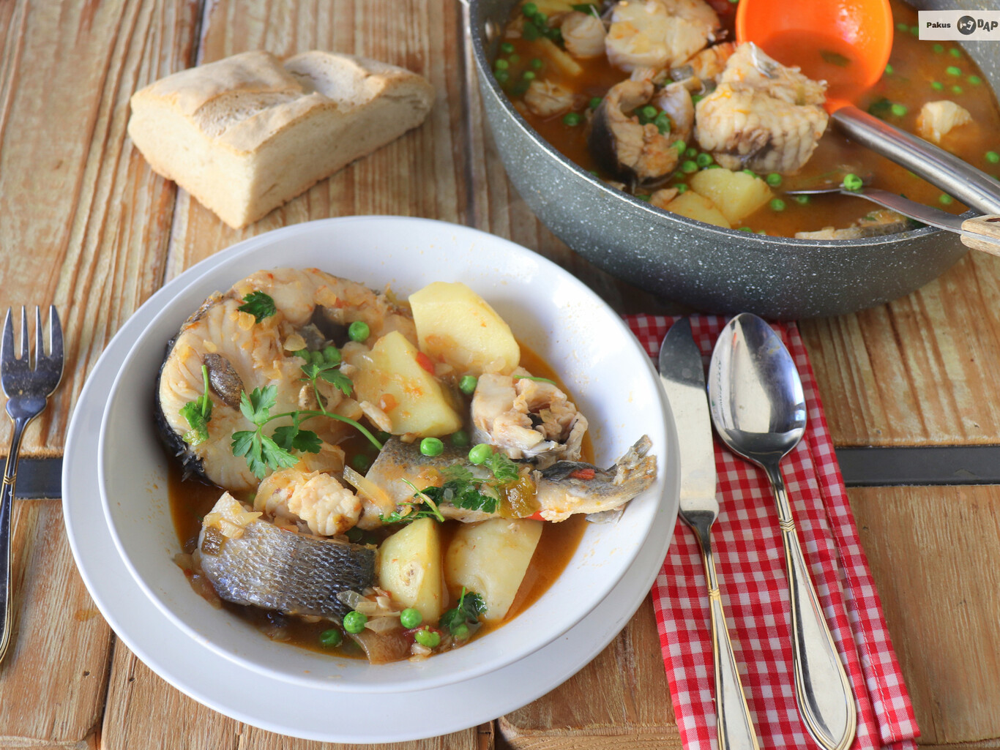

Recetas de cocina - PESCADO
INICIO
CARNE
PESCADO
Pescadilla al horno con patatas

Lista de ingredientes
- 1,2 kg Pescadilla
- 4 patatas
- Picada de ajo y perejil al gusto
- 1 chorro Vino blanco
- Sal y pimienta al gusto
- Limón para decorar
Pasos a seguir:
- Precalentamos el horno a 180ºC. Cortamos la cabeza a la pescadilla y sacamos los lomos, conservando cabeza y raspas para poder hacer un buen fumet de pescado, que utilizaremos en otras recetas. Cortamos los lomos en dos mitades para obtener así cuatro buenas raciones.
- Pelamos las patatas y las cortamos en rodajas de menos de medio centímetro de grosor. Las disponemos repartidas sobre una fuente de horno y añadimos un chorrito de aceite de oliva virgen extra, un chorrito de vino blanco y sal y pimienta al gusto. Metemos la fuente en el horno y dejamos que las patatas empiecen a cocinarse.
- Cuando lleven quince minutos, abrimos el horno y colocamos los cuatro lomos de la pescadilla, cubiertos con un poco de ajo y perejil picado. Horneamos durante otros quince minutos, y sacamos del horno, porque nuestra receta estará lista para llevar a la mesa. Decoramos con hierbas frescas y unas rodajitas de limón.
Ir a la receta original
Caldeirada de pescado gallega

Lista de ingredientes
- 2 Merluzas en rodajas
- 1 lomo Rape fresco cortado en trozos medianos
- Pescadilla pequeña cortada en rodajas
- Lubina de ración cortada en rodajas
- 2 patatas
- 5 cucharadas Sofrito casero
- 500 ml Caldo de pescado o fumet
- Sal y pimienta al gusto
- 2 cucharadas Aceite de oliva virgen extra
- Un puñado Guisantes
Pasos a seguir:
- Preparamos el pescado, separando los lomos del rape, cortando la lubina y la pescadilla en rodajas y reservamos para más adelante. Con las cabezas y espinas y un litro de agua, preparamos un fumet de pescado casero, que usaremos después para nuestro guiso.
- Preparamos un sofrito con cebolla, un tomate, -un pimiento verde opcional- y un diente de ajo, todo muy picado. Mientras se hace, vamos pelando las patatas y cortándolas en cachelos, desgarrando un poco para que el guiso quede más trabado. Agregamos las patatas a la cacerola y añadimos un buen toque de pimentón de la Vera y cubrimos con nuestro caldo casero. Llevamos a ebullición y cocemos hasta que las patatas estén casi hechas, unos 25 minutos aproximadamente.
- Introducimos ahora los trozos de pescado, bien repartidos y dejamos que el conjunto se haga a fuego medio-bajo durante unos diez minutos. Agregamos un puñado de guisantes -pueden ser congelados- y dejamos que se cocinen durante dos o tres minutos más, y ya tenemos listo este delicioso plato gallego.
Ir a la receta original